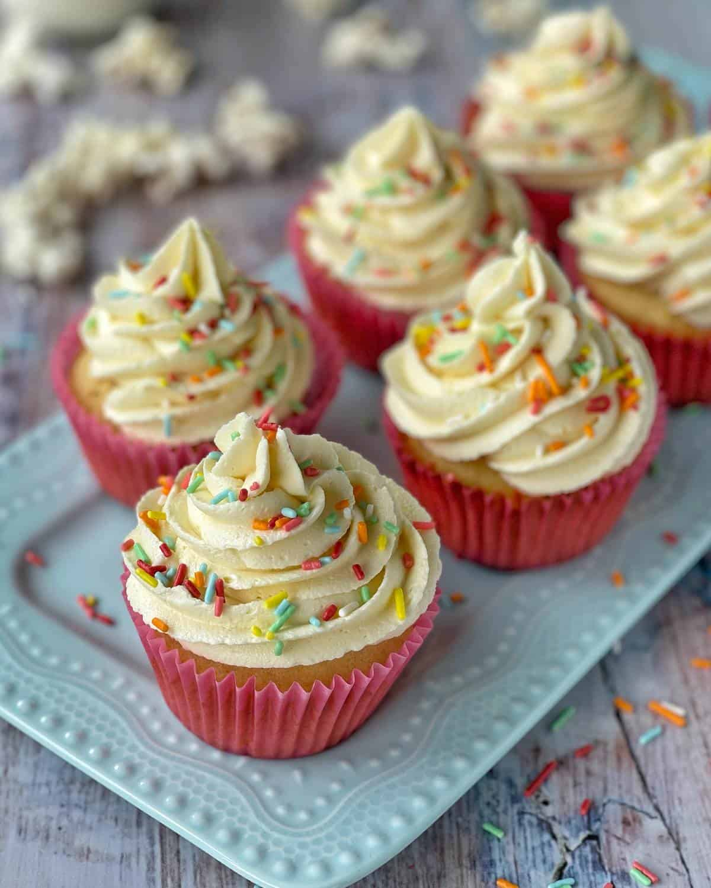

Odin Recipes

Go back to main page
The Vanilla Cupcakes
oft, fluffy, and delicately sweet, these golden cupcakes are infused with warm vanilla flavor and topped with a swirl of creamy frosting. Perfect for celebrations—or just treating yourself.

Ingredients needed for this recipe :
- 1 and a half cups all-purpose flour
- 1 and a half tsp baking powder
- half tsp salt
- half cup unsalted butter
- 1 cup sugar
- 2 large eggs
- 2 tsp vanilla extract
- half cup milk
Steps to make this meal
- Preheat oven to 350°F (175°C) and line a muffin tin with cupcake liners.
- In a bowl, whisk together flour, baking powder, and salt.
- In another bowl, beat butter and sugar until light and fluffy.
- Crack eggs into a small bowl, then add to the butter mixture one at a time, beating well after each addition. Stir in vanilla extract.
- Add dry ingredients and milk alternately to the butter mixture, mixing just until combined.
- Spoon batter into cupcake liners until about two third full. Bake 18 to 20 minutes or until a toothpick comes out clean. Cool completely before frosting.
There is it, Your meal is ready to serve. Enjoy !
Go back to main page
About this website